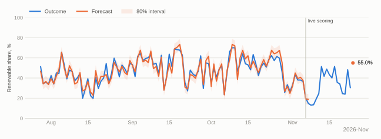
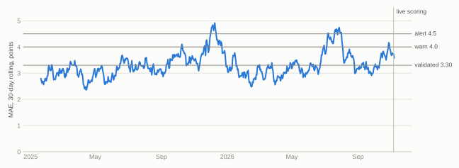
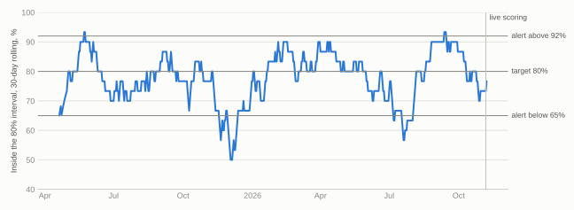

Pulse model status
Day-ahead forecast of Great Britain's renewable share (wind, hydro and biomass), pulse.ml.renewable_share_day_ahead. Updated daily from the Databricks deployment. Generated 2026-11-24 12:28 UTC.
Champion
v1
challenger v2 awaiting review
MAE, last 30 days
3.58 pts
2 live days + 28 walk-forward; alert above 4.5
Interval coverage, 90 days
83%
target 80%; 90 days
Latest forecast
55.0%
2026-11-24, 80% interval 49.6–60.3
Forecast and outcome

Accuracy


Recent days
| Day | Source | Forecast % | 80% interval | Outcome % |
|---|---|---|---|---|
| 2026-11-24 | live | 55.0 | 49.6–60.3 | |
| 2026-11-07 | live | 18.8 | 13.4–24.2 | 14.8 |
| 2026-11-06 | live | 19.3 | 13.9–24.6 | 20.1 |
| 2026-11-05 | walk-forward | 37.5 | 32.1–43.0 | 36.6 |
| 2026-11-04 | walk-forward | 40.7 | 35.3–46.2 | 38.0 |
| 2026-11-03 | walk-forward | 39.5 | 34.0–44.9 | 38.0 |
| 2026-11-02 | walk-forward | 45.0 | 39.6–50.4 | 43.4 |
| 2026-11-01 | walk-forward | 32.0 | 26.6–37.4 | 33.0 |
| 2026-10-31 | walk-forward | 24.8 | 19.4–30.2 | 26.8 |
| 2026-10-30 | walk-forward | 31.6 | 26.2–37.1 | 33.4 |
| 2026-10-29 | walk-forward | 26.7 | 21.3–32.1 | 25.6 |
| 2026-10-28 | walk-forward | 55.3 | 49.8–60.7 | 46.1 |
| 2026-10-27 | walk-forward | 67.4 | 62.0–72.8 | 59.7 |
| 2026-10-26 | walk-forward | 65.1 | 59.7–70.5 | 61.4 |
Monitoring
Latest run 2026-11-24. Accuracy and drift need about 30 scored days with outcomes before they grade.
| Check | Worst |
|---|---|
| accuracy | not enough data yet |
| feature drift | not enough data yet |
| freshness | ok |
| prediction drift | not enough data yet |
| Source | Present vs usual | Freshness |
|---|---|---|
| bank_holidays | 1.00 | ok |
| calendar | 1.00 | ok |
| carbon_intensity | 1.00 | ok |
| demand_forecast | 1.00 | ok |
| demand_outturn | 1.00 | ok |
| fuelhh | 1.00 | ok |
| market_index | 1.00 | ok |
| neso_demand | 1.00 | ok |
| pv_live | 1.00 | ok |
| remit_outages | 1.00 | ok |
| system_prices | 1.00 | ok |
| weather_day_ahead | 1.00 | ok |
| weather_historical | 1.00 | ok |
| wind_forecast | 1.00 | ok |
| wind_solar_actual | 1.00 | ok |
| wind_solar_forecast | 1.00 | ok |
Retraining gate
The monthly job refits the champion's own specification and must pass every check to become @challenger. A person promotes it to @champion.
Run of 2026-11-24: passed: registered as @challenger. Run id 25587a42c4a74cc691b2782d2b137cab.
| Check | Value | Limit | Result | Detail |
|---|---|---|---|---|
| training days | 1100.000 | 600 | ok | |
| walk forward mae | 3.310 | 3.54 | ok | 674 out-of-sample days since 2025-01-01 |
| recent mae | 3.392 | 4.5 | ok | last 90 days |
| recent bias | 0.391 | 2 | ok | mean error -0.39 (positive: under-predicting) |
| coverage | 0.178 | 0.05 | ok | 454/584 = 77.7% inside; Kupiec p = 0.178 |
| agreement | 0.069 | 2 | ok | mean |difference| 0.07, largest 0.38 (limit 8.0) over 60 days |
| valid output | 0.000 | 0 | ok | predictions outside 0-100 or not finite |
Registry
| Version | Aliases | Registered | Gate | Walk-forward MAE | Trained through |
|---|---|---|---|---|---|
| v2 | @challenger | 2026-11-24 | passed | 3.310 | 2026-11-05 |
| v1 | @champion | 2026-11-22 | – | – | – |